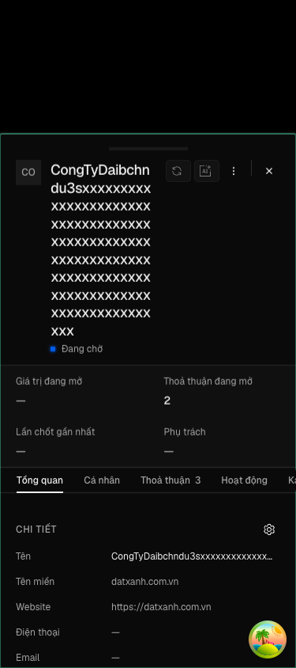
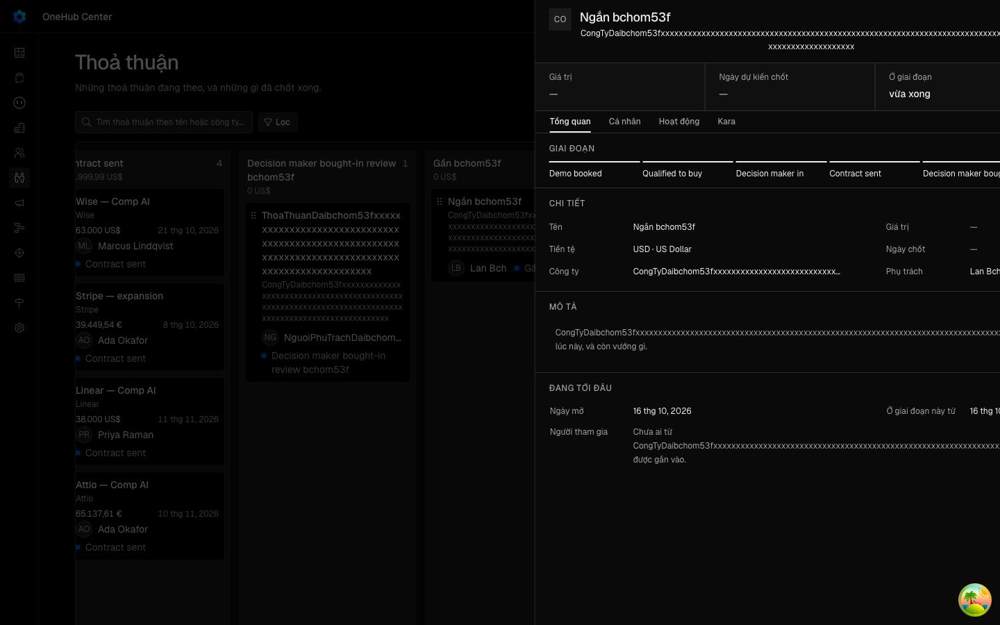

"Ngăn bản ghi và Kanban thoả thuận không vỡ bố cục ở khổ hẹp"
Vì sao làm
Hàng V2c của docs/plan/lo-trinh-okr.json, dãy P4 của đợt r2; Cổng Đáng ký build 12/10. Hai lỗi bố cục có từ trước thấy ở E13 của V2 (_acceptance/vong-doi-mot-cach-cat, sổ d-20261009T135725Z-13): ở khổ hẹp, hàng số liệu đầu ngăn và thanh giai đoạn cắt chữ bằng «…», còn nhãn giai đoạn trên thẻ Kanban thoả thuận tràn khỏi viền thẻ. Hạng T2: chạm apps/app và packages/ui, không chạm API, cơ sở dữ liệu hay đường T3.
Đã hứa
- AC-1 — Given Bảng cột thoả thuận có thoả thuận tên 120 ký tự không dấu cách, công ty và người phụ trách tên 120 ký tự
- AC-2 — Given ngăn thoả thuận đó mở ở khổ 375, When nhìn hàng số liệu đầu ngăn, Then bốn ô — Giá trị, Ngày dự kiến
- AC-3 — Given ngăn thoả thuận mở ở khổ 375 — một thoả thuận ở giai đoạn mở tên dài, một ở giai đoạn chốt tên dài —
- AC-4 — Given ngăn công ty tên 120 ký tự mở ở khổ 375, When nhìn hàng số liệu đầu ngăn, Then bốn ô xếp hai cột, nhãn
- AC-5 — Given khổ 1440, When nhìn ngăn thoả thuận và một thẻ Kanban có người phụ trách và giai đoạn tên ngắn, Then bố
- AC-6 — Given khổ 375, When mở Bảng cột thoả thuận và mở ngăn một thoả thuận, Then trang không cuộn ngang và không phần
- AC-7 — Given chấm trạng thái của `packages/ui` dùng ở mọi màn khác, When không truyền biến thể xuống dòng, Then nhãn
Thiết kế
docs/superpowers/specs/2026-10-16-bo-cuc-hep-ngan-va-kanban-design.md
Quyết định
- 2026-10-16 · Máy · approach · S1 — Hỏi-1: dưới md, bốn số liệu đầu ngăn xếp lưới 2×2, nhãn và giá trị xuống dòng thay vì cắt «…»; từ md giữ một hàng như hôm nay.Ảnh vdc-ngan-da-cat-390.png của V2 cắt «Ngày dự …», «Ở giai đo…», «P…»; bốn ô một hàng ở 375 chỉ còn ~90 px mỗi ô.
- 2026-10-16 · Máy · approach · S1 — Hỏi-2: dưới md, tên mỗi bước của thanh giai đoạn xuống dòng đủ chữ (có thể hai–ba dòng); từ md giữ một dòng như hôm nay.Ở 375 năm bước chia ~65 px mỗi bước, tên như «Decision maker bought-in» không thể vừa một dòng.
- 2026-10-16 · Máy · approach · S1 — Hỏi-3: trên thẻ Kanban, chỉ báo giai đoạn xuống dòng riêng dưới người phụ trách khi không đủ chỗ, nhãn đủ chữ trong viền thẻ.Ảnh vdc-kanban-390.png: «Demo booked» tràn khỏi viền phải thẻ ~20 px ở cột rộng ~240 px.
- 2026-10-16 · Máy · approach · S1 — StatusIndicator của packages/ui thêm một biến thể nhãn xuống dòng (mặc định vẫn cắt); thanh giai đoạn và thẻ Kanban dùng biến thể đó.Nhãn của StatusIndicator luôn truncate; đè className ở chỗ gọi bị cấm.
- 2026-10-16 · Máy · approach · S1 — Ngưỡng đổi bố cục là md, cùng ngưỡng mà ô giá trị số liệu đã thôi xuống dòng.DetailSheetStat đã có dd wrap-anywhere dưới md và md:truncate từ md; giữ cùng ngưỡng cho nhãn, thanh giai đoạn và thẻ.
- 2026-10-16 · Máy · approach · S1 — DealStageIndicator thôi bọc nhãn trong span inline, truyền translate="no" thẳng cho StatusIndicator.Span inline bao quanh khối inline-flex không co được trong hàng flex của thẻ Kanban — đó là chỗ nhãn tràn viền.
- 2026-10-16 · Máy · descope · S1 — bỏ design-pass — vòng không thêm màn hay thành phần mới, chỉ sửa bố cục khổ hẹp của ba vùng có sẵn; ảnh trước có ở E13 của V2, ảnh sau ở 375 và 1440 của E1–E5 cho người xem ở Cổng Bằng chứng.Ba câu Hỏi ở trên là chỗ gu nhìn duy nhất và đã có khuyến nghị kèm lối khác.
- 2026-10-16 · Máy · descope · S1 — bỏ đường-đo — ô cơ hội không khai ngưỡng (hàng dựng).opportunity.md để trống ba ô ngưỡng.
- 2026-10-16 · Máy · approach · S1 — Thẻ Kanban giữ cả hai: hàng người phụ trách và giai đoạn xuống dòng, và nhãn giai đoạn co được và xuống dòng trong viền thẻ; mỗi thứ có một chiều đỏ riêng ở E7.Phản biện context sạch: chẩn đoán cũ «span inline không co được» sai — span con trực tiếp của khung flex là phần tử flex; thủ phạm là hàng không xuống dòng và nhãn mang min-width:auto.
- 2026-10-16 · Máy · approach · S1 — Hỏi-4: bỏ bản mẫu trước Cổng Phạm vi; xem bố cục mới bằng ảnh 375 và 1440 ở Cổng Bằng chứng.Ba vùng chỉ đổi CSS của thành phần có sẵn; đổi sang lối khác của Hỏi-1 đến Hỏi-3 sau khi thấy ảnh là một nhát sửa nhỏ.
- 2026-10-16 · Người (Phan Le Manh) · revisit · gate1 — Duyệt — Hỏi-1, Hỏi-2, Hỏi-3, Hỏi-4 theo khuyến nghịCâu người gõ ở Cổng Phạm vi.
- 2026-10-16 · Người · seal · gate1 —
- 2026-10-16 · Máy · fix · S3 — Đổi hai chiều đỏ của E7 sau Cổng Phạm vi: (1) thành «hàng số liệu trở về một hàng» với ghim «ngan so lieu mot hang», (2) «bỏ flex-wrap» nay ghim «the kanban khong xuong dong»; E1 thêm phép Hỏi-3 (ở 375 nhãn giai đoạn đứng hàng riêng dưới người phụ trách); «cắt chữ» ở hàng số liệu đo trên mọi phần tử con.Khi viết thước: chỉ trả truncate cho nhãn thì nhãn vẫn vừa ô 2×2, chỉ bỏ flex-wrap thì nhãn vẫn co và xuống dòng trong hàng — hai chiều cũ không thể đỏ, tức thước không chứng được thứ bản sửa giữ.
- 2026-10-16 · Người (Phan Le Manh) · approach · S3 — Hỏi-5: A — trên điện thoại chip giai đoạn ở đầu ngăn co lại và cắt «…», tiêu đề giữ bề rộng tối thiểu; Button của packages/ui thêm biến thể co được (mặc định không đổi). Đầu ngăn vào phạm vi AC-6 ở đúng phần không tràn.Bước 6 của E6 bắt được: giai đoạn tên 40 ký tự làm chip ở đầu ngăn chiếm hết hàng, tiêu đề còn một ký tự mỗi dòng, ⋮ và × tràn ngoài ngăn; AC-6 và OOS-3 mâu thuẫn ở chỗ này.
- 2026-10-16 · Máy · fix · S4-r1 — Thước do-bo-cuc: bước 2 và bước 4 kiểm chữ của ô Phụ trách chứa đủ tên 120 ký tự (công ty gieo kèm người phụ trách tên dài); phép quét tràn của bước 6 tính cả thân ngăn, chỉ bỏ qua khung cuộn ngang có chủ đích và chữ cắt bằng «…», kèm sàn 100 phần tử; thêm ba chiều đỏ (8) ô Phụ trách chỉ hiện ảnh, (9) tên bước không xuống dòng không cắt, (10) ô Phụ trách ngăn công ty bỏ xuongDongDienThoai.Bốn lỗi trong hợp đồng ở S4 round 1 (review-findings.md): AC-2 vế dương tên phụ trách không được đo (t3, t5), AC-6 bỏ qua cả thân ngăn vì khung cuộn dọc mang overflow-x auto (t4), AC-4 không có dữ liệu kích được phép cắt chữ (t6).
- 2026-10-16 · Máy · fix · S4-r1 — Hai chỗ trong thân ngăn thoả thuận cho từ dài không dấu cách xuống dòng: dòng «Chưa ai từ <công ty> được gắn vào» (deal-sheet.tsx) và chữ gợi ý cùng giá trị của ô sửa tại chỗ dạng khối (inline-field.tsx).Phép quét tràn mới của E6 (quét cả thân ngăn) bắt được hai chỗ làm thân ngăn cuộn ngang 441–549 px với tên công ty 120 ký tự; một lần sửa nút chọn dùng chung (select.tsx) do chẩn đoán nhầm đã gỡ lại ở 0da0bda5d.
Bằng chứng
Các eval
| Eval | Tiêu chí | Loại | Verdict | run_id | verified_at |
|---|---|---|---|---|---|
| E1 | AC-1 | ui-check | PASS | minted-bo-cuc-hep-ngan-va-kanban-E1-r2 | 2026-10-16T07:55:53Z |
| E2 | AC-2 | ui-check | PASS | minted-bo-cuc-hep-ngan-va-kanban-E2-r2 | 2026-10-16T07:55:53Z |
| E3 | AC-3 | ui-check | PASS | minted-bo-cuc-hep-ngan-va-kanban-E3-r2 | 2026-10-16T07:55:53Z |
| E4 | AC-4 | ui-check | PASS | minted-bo-cuc-hep-ngan-va-kanban-E4-r2 | 2026-10-16T07:55:53Z |
| E5 | AC-5 | ui-check | PASS | minted-bo-cuc-hep-ngan-va-kanban-E5-r2 | 2026-10-16T07:55:53Z |
| E6 | AC-6 | ui-check | PASS | minted-bo-cuc-hep-ngan-va-kanban-E6-r2 | 2026-10-16T07:55:53Z |
| E7 | AC-2 | script | PASS | minted-bo-cuc-hep-ngan-va-kanban-E7-r2 | 2026-10-16T07:55:53Z |
| E8 | AC-7 | test | PASS | minted-bo-cuc-hep-ngan-va-kanban-E8-r1 | 2026-10-16T07:24:42Z |
Chi tiết từng eval
PASS E1 · ui-check
AC-1: Given Bảng cột thoả thuận có thoả thuận tên 120 ký tự không dấu cách, công ty và người phụ trách tên 120 ký tự
PASS E2 · ui-check
AC-2: Given ngăn thoả thuận đó mở ở khổ 375, When nhìn hàng số liệu đầu ngăn, Then bốn ô — Giá trị, Ngày dự kiến
PASS E3 · ui-check
AC-3: Given ngăn thoả thuận mở ở khổ 375 — một thoả thuận ở giai đoạn mở tên dài, một ở giai đoạn chốt tên dài —
PASS E4 · ui-check
AC-4: Given ngăn công ty tên 120 ký tự mở ở khổ 375, When nhìn hàng số liệu đầu ngăn, Then bốn ô xếp hai cột, nhãn

PASS E5 · ui-check
AC-5: Given khổ 1440, When nhìn ngăn thoả thuận và một thẻ Kanban có người phụ trách và giai đoạn tên ngắn, Then bố

PASS E6 · ui-check
AC-6: Given khổ 375, When mở Bảng cột thoả thuận và mở ngăn một thoả thuận, Then trang không cuộn ngang và không phần

PASS E7 · script
AC-2: Given ngăn thoả thuận đó mở ở khổ 375, When nhìn hàng số liệu đầu ngăn, Then bốn ô — Giá trị, Ngày dự kiến
cmd: bash _acceptance/tieu-de-cot-doc-tron/rang/mot-luot.sh "bun _acceptance/bo-cuc-hep-ngan-va-kanban/rang/do-bo-cuc.mjs --chi-do" phien-do: xong — mã 0
PASS E8 · test
AC-7: Given chấm trạng thái của `packages/ui` dùng ở mọi màn khác, When không truyền biến thể xuống dòng, Then nhãn
carry-forward tu round 1 — delta khong cham paths cua eval
Vòng verify
- Round 1: cả tám eval (E1-E8) đạt, các lệnh suite hồi quy đều xanh; verdict PASS.
- Round 2: E1-E7 chạy lại trên cây đã sửa ở vật (S4-r1), đều đạt; E8 giữ nguyên từ round 1 vì delta không chạm paths của nó; các lệnh suite đều xanh; verdict PASS.
Tài nguyên
Giới hạn và ngoài hợp đồng
- Ngăn liên hệ và các bảng `DataTable` ở khổ hẹp — không thuộc câu giao.
- Kanban việc (`DA2`) và các bảng cột khác — E13 không thấy lỗi ở đó.
- Đầu ngăn (tên bản ghi, chip giai đoạn ở góc phải) — ảnh 390 của E13 không cắt chữ ở đó.
Giao
chưa gộp vào onehub (nhánh production kho khai)
Giá trị
- Câu hỏi phép đo trả lời: … — chưa đo
- Kết quả nào là SỐNG: … — chưa đo
- Kết quả nào là CHẾT: … — chưa đo
- Timebox: … — chưa đo